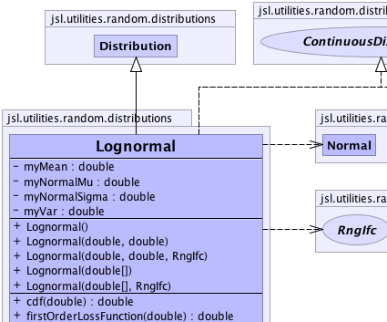
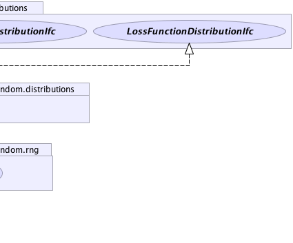
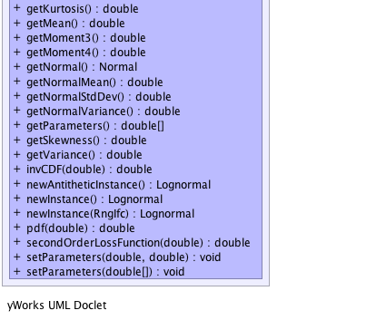

jsl.utilities.random.AbstractRandom
jsl.utilities.random.distributions.Distribution
jsl.utilities.random.distributions.Lognormal
jsl.utilities.random.AbstractRandom
jsl.utilities.random.distributions.Distribution
jsl.utilities.random.distributions.Lognormal
|
||||||||||
| PREV CLASS NEXT CLASS | FRAMES NO FRAMES | |||||||||
| SUMMARY: NESTED | FIELD | CONSTR | METHOD | DETAIL: FIELD | CONSTR | METHOD | |||||||||
java.lang.Object
public class Lognormal
Models lognormally distributed random variables This distribution is commonly use to model the time of a task
|  |  |
|  |
| Nested Class Summary |
|---|
| Nested classes/interfaces inherited from class jsl.utilities.random.AbstractRandom |
|---|
AbstractRandom.RandomControls |
| Field Summary | |
|---|---|
private double |
myMean
|
private double |
myNormalMu
|
private double |
myNormalSigma
|
private double |
myVar
|
| Fields inherited from class jsl.utilities.random.distributions.Distribution |
|---|
myRNG |
| Fields inherited from class jsl.utilities.random.AbstractRandom |
|---|
myId, myName |
| Constructor Summary | |
|---|---|
Lognormal()
Constructs a lognormal distribution with mean 1.0 and variance 1.0 |
|
Lognormal(double[] parameters)
Constructs a lognormal distribution with mean = parameters[0] and variance = parameters[1] |
|
Lognormal(double[] parameters,
RngIfc rng)
Constructs a lognormal distribution with mean = parameters[0] and variance = parameters[1] |
|
Lognormal(double mean,
double variance)
Constructs a lognormal distribution with mean and variance. |
|
Lognormal(double mean,
double variance,
RngIfc rng)
Constructs a lognormal distribution with mean and variance. |
|
| Method Summary | |
|---|---|
double |
cdf(double x)
Returns the F(x) = Pr{X <= x} where F represents the cumulative distribution function |
double |
firstOrderLossFunction(double x)
Computes the first order loss function for the function for given value of x, G1(x) = E[max(X-x,0)] |
double |
getKurtosis()
Gets the kurtosis of the distribution |
double |
getMean()
Returns the mean or expected value of a distribution |
double |
getMoment3()
|
double |
getMoment4()
|
Normal |
getNormal()
Provides a normal distribution with correct parameters as related to this lognormal distribution |
double |
getNormalMean()
The mean of the underlying normal |
double |
getNormalStdDev()
The standard deviation of the underlying normal |
double |
getNormalVariance()
The variance of the underlying normal |
double[] |
getParameters()
Gets the parameters for the distribution |
double |
getSkewness()
Gets the skewness of the distribution |
double |
getVariance()
Returns the variance of the distribution if defined |
double |
invCDF(double p)
Provides the inverse cumulative distribution function for the distribution |
Lognormal |
newAntitheticInstance()
Returns a new instance that will supply values based on antithetic U(0,1) when compared to this distribution |
Lognormal |
newInstance()
Returns a new instance of the random source with the same parameters but an independent generator |
Lognormal |
newInstance(RngIfc rng)
Returns a new instance of the random source with the same parameters with the supplied RngIfc |
double |
pdf(double x)
Returns the f(x) where f represents the probability density function for the distribution. |
double |
secondOrderLossFunction(double x)
Computes the 2nd order loss function for the distribution function for given value of x, G2(x) = (1/2)E[max(X-x,0)*max(X-x-1,0)] |
void |
setParameters(double[] parameters)
Sets the parameters for the distribution mean = parameters[0] and variance = parameters[1] |
void |
setParameters(double mean,
double variance)
Sets the parameters of a lognormal distribution to mean and variance. |
| Methods inherited from class jsl.utilities.random.distributions.Distribution |
|---|
advanceToNextSubstream, cdf, complementaryCDF, getAntitheticOption, getAntitheticValue, getRandomNumberGenerator, getStandardDeviation, getValue, inverseContinuousCDFViaBisection, inverseContinuousCDFViaBisection, inverseDiscreteCDFViaSearchUp, resetStartStream, resetStartSubstream, setAntitheticOption, setRandomNumberGenerator, toString |
| Methods inherited from class jsl.utilities.random.AbstractRandom |
|---|
getId, getName, getSample, getSample, makeControls, setControls, setId, setName |
| Methods inherited from class java.lang.Object |
|---|
clone, equals, finalize, getClass, hashCode, notify, notifyAll, wait, wait, wait |
| Methods inherited from interface jsl.utilities.random.distributions.CDFIfc |
|---|
cdf, complementaryCDF |
| Methods inherited from interface jsl.utilities.random.distributions.VarianceIfc |
|---|
getStandardDeviation |
| Methods inherited from interface jsl.utilities.random.SampleIfc |
|---|
getSample, getSample |
| Field Detail |
|---|
private double myMean
private double myVar
private double myNormalMu
private double myNormalSigma
| Constructor Detail |
|---|
public Lognormal()
public Lognormal(double[] parameters)
parameters - An array with the mean and variance
public Lognormal(double[] parameters,
RngIfc rng)
parameters - An array with the mean and variancerng -
public Lognormal(double mean,
double variance)
mean - must be > 0variance - must be > 0
public Lognormal(double mean,
double variance,
RngIfc rng)
mean - must be > 0variance - must be > 0rng - A RngIfc| Method Detail |
|---|
public final Lognormal newInstance()
newInstance in interface NewInstanceIfcnewInstance in interface RandomIfcnewInstance in class Distributionpublic final Lognormal newInstance(RngIfc rng)
newInstance in interface RandomIfcnewInstance in class Distributionrng -
public final Lognormal newAntitheticInstance()
newAntitheticInstance in class Distribution
public final void setParameters(double mean,
double variance)
mean - must be > 0variance - must be > 0public final double getMean()
MeanIfc
getMean in interface MeanIfcpublic final double getMoment3()
public final double getMoment4()
public final double getVariance()
VarianceIfc
getVariance in interface VarianceIfcpublic final Normal getNormal()
public final double getNormalMean()
public final double getNormalVariance()
public final double getNormalStdDev()
public final double cdf(double x)
CDFIfc
cdf in interface CDFIfcx - a double representing the upper limit
public final double invCDF(double p)
invCDF in interface CDFIfcp - The probability to be evaluated for the inverse, p must be [0,1] or
an IllegalArgumentException is thrown
p = 0.0 returns 0.0
p = 1.0 returns Double.POSITIVE_INFINITY
public final double pdf(double x)
PDFIfc
pdf in interface PDFIfcx - a double representing the value to be evaluatedpublic final double getSkewness()
public final double getKurtosis()
public final void setParameters(double[] parameters)
setParameters in interface ParametersIfcparameters - an array of doubles representing the parameters for
the distributionpublic final double[] getParameters()
getParameters in interface ParametersIfcpublic double firstOrderLossFunction(double x)
FirstOrderLossFunctionIfc
firstOrderLossFunction in interface FirstOrderLossFunctionIfcx - The value to be evaluated
public double secondOrderLossFunction(double x)
SecondOrderLossFunctionIfc
secondOrderLossFunction in interface SecondOrderLossFunctionIfcx - The value to be evaluated
|
||||||||||
| PREV CLASS NEXT CLASS | FRAMES NO FRAMES | |||||||||
| SUMMARY: NESTED | FIELD | CONSTR | METHOD | DETAIL: FIELD | CONSTR | METHOD | |||||||||